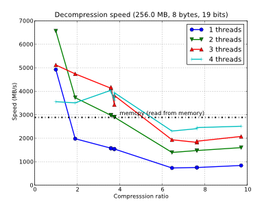
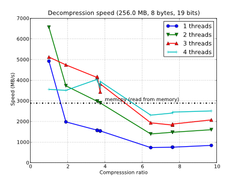

Benchmarks for BloscLZ
Contributed outputs for BloscLZ compressor
Processor model: IBM Blue Gene Q embedded "A2" processor
Compiler: bgclang, version r209570-20140527 based on clang-3.5.0
Optimizations: -O3, but as this is BGQ, no sse instructions
OS: IBM Blue Gene Q driver version V1R2M1
Contributed by: Rob Latham
Processor model: Intel Core i5 i5-3380M (2 x 2.9 GHZ) 3 MB Cache
Compiler: GCC version 4.8.2-19ubuntu1
OS: Ubuntu 14.04 3.13.0-29-generic #53-Ubuntu SMP (64 bit)
Contributed by: Francesc Alted
Processor model: Intel Core i7 3930K Unlocked (6 x 3.2 GHZ) 12 MB Cache
Compiler: GCC version 4.6.1 20110908 (Red Hat 4.6.1-9)
OS: Fedora 15 2.6.42.9-1.fc15.x86_64 #1 SMP (64 bit)
Contributed by: Alvaro Tejero
- Processor model: 2 x Six-Core Intel Xeon CPU X5690 @ 3.47GHz
-
(12 physical cores, hyperthreading disabled)
Compiler: GCC 4.4.5 (Red Hat 4.4.5-6)
OS: Red Hat Enterprise Linux 6 (2.6.32-131.0.15.el6.x86_64), 64-bit
Contributed by: Valentin Haenel
Processor model: 4 x Six-Core AMD Opteron(tm) Processor 8431 (24 cores @ 2.4 GHz)
Compiler: GCC (Debian 4.4.5-8) 4.4.5
OS: Debian 6.0.2 (Squeeze), 64-bit
Contributed by: Valentin Haenel
Processor model: Six-Core Intel i7 (Bloomfield) @ 3.33 GHz / 1 processors
Compiler: GCC 4.4.5
OS: Debian 6.0.2 (Squeeze), 64-bit
Contributed by: Francesc Alted
Processor model: Quad-Core Intel Xeon (Nehalem) @ 2.93 GHz / 2 processors
Compiler: GCC 4.5
OS: Mac OSX Snow Leopard (10.6.3), 64-bit
Contributed by: Louis Wicker
Processor model: AMD Phenom II X6 @ 3.7 GHz
Compiler: MINGW64/GCC version 4.4.5
OS: Windows 7, 64-bit
Contributed by: Francesc Alted
Processor model: Intel Core2 Quad @ 3 GHz
Compiler: MSVC 2008
OS: Windows, 64-bit
Contributed by: Christoph Gohlke
 
Processor model: Intel Core2 Quad Q8400 @ 2.66 GHz
Compiler: GCC version 4.4.1
OS: openSUSE 11.2, 64-bit
Contributed by: Francesc Alted
Processor model: Intel Core2 Duo E8400 @ 3 GHz
Compiler: GCC version 4.4.3
OS: OpenSUSE Linux 11.2, 64-bit
Contributed by: Francesc Alted
Processor model: Dual-Core AMD Opteron 1214 @ 2.2 GHz
Compiler: GCC version 4.4.3
OS: Ubuntu Linux 10.04, 64-bit
Contributed by: Tony Theodore
Processor model: Intel Pentium4 @ 3.2 GHz (with hyper-threading)
Compiler: GCC version 4.4.3
OS: Ubuntu Linux 10.04, 32-bit
Contributed by: Gabriel Beckers
Processor model: Intel Atom 330 @ 1.6 GHz (2 physical cores, with hyper-threading)
Compiler: GCC version 4.5.2
OS: Ubuntu Linux 11.04, 64-bit
Contributed by: Valentin Haenel
Processor model: Intel Atom N270 @ 1.6 GHz (with hyper-threading)
Compiler: GCC version 4.4.3
OS: Ubuntu Linux 10.04, 32-bit
Contributed by: Francesc Alted
Processor model: PowerPC G4 @ 1.2 GHz / 512 KB L2 cache
Compiler: GCC version 4.0.1
OS: Mac OSX Tiger, 32-bit
Contributed by: Ivan Vilata